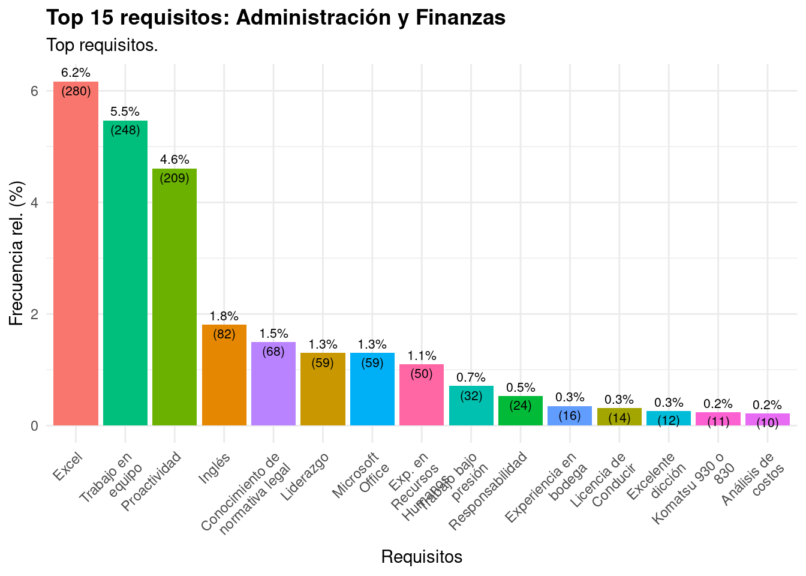
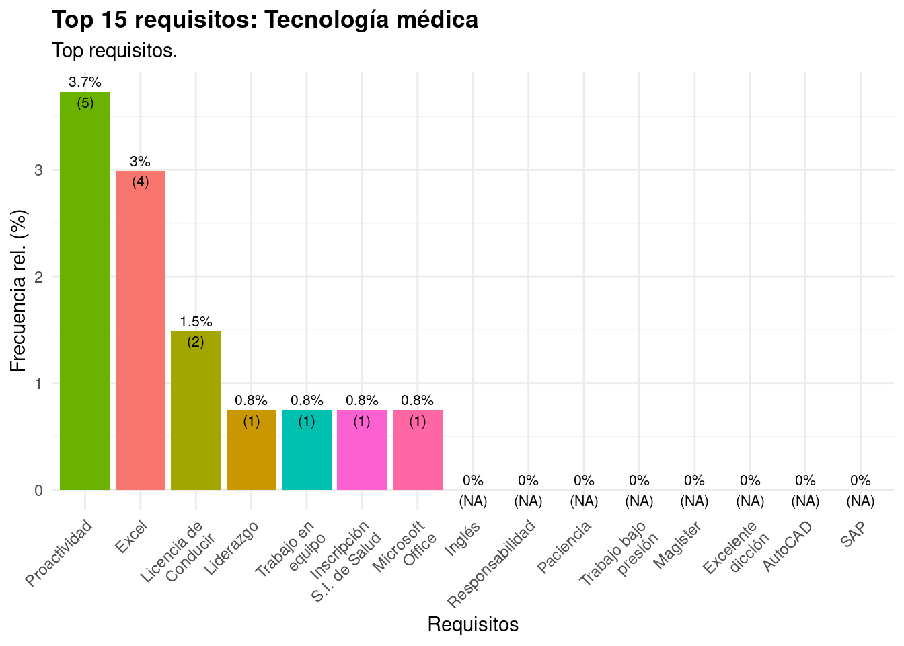

3 Requisitos según categoría ocupacional
Esta es la sección principal del informe. Para cada una de nuestras categorías ocupacionales, listamos los requisitos más indicados.
3.1 Requisitos en Logística
En logística, los requisitos más comunes son tener experiencia en bodega y tener más de 18 años.

Abajo hay ejemplos de frases representativos para la clase “Logística”, en el formato original.
[1] “-Manejo de Excel nivel intermedio”
[2] “-Esperamos de ti que te manejes con Excel a derecho y al revés.”
[3] “-Manejar Excel es clave para este rol”
[4] “-Manejo en Microsoft Excel”
[5] “-Manejo de Excel Nivel Intermedio (desesable-no excluyente)”
3.2 Requisitos en Administración y Finanzas

Abajo hay ejemplos de frases representativos para la clase “Administración y Finanzas”, en el formato original.
[1] “Conocimiento avanzado en suite office, en especial MS Excel y Access.”
[2] “-Excel intermedio”
[3] “Formación superior en Contabilidad, Auditoría, Administración o afín. Con conocimientos en normativa contables, tributarias. Deseable conocimiento en algún ERP. Computación nivel usuario, Excel nivel medio. Deseable 5 años de experiencia en cargo de similares características en empresas productivas.”
[4] “-Manejo en MS Excel”
[5] “• Conocimiento en Excel, nivel intermedio.”
3.3 Requisitos en Computación y Redes

Abajo hay ejemplos de frases representativos para la clase “Computación y Redes”, en el formato original.
[1] “-Inglés intermedio”
[2] “-Inglés intermedio.”
[3] “-Manejar Inglés en nivel Avanzado.”
[4] “-Manejar cómodamente el Inglés oral y escrito.”
[5] “-Deseable Inglés intermedio”
3.4 Requisitos en Prevención de riesgos

Abajo hay ejemplos de frases representativos para la clase “Prevención de Riesgos”, en el formato original.
[1] “- Tener 2 años de experiencia en roles de liderazgo.”
[2] “Microsoft Office nivel intermedio ((MS Excel, Word, PPT, Outlook)”
[3] “•básicos en normas ISO 9001, ISO 14001, OHSAS 18001/ISO 45001.”
3.5 Requisitos en Comercio

Abajo hay ejemplos de frases representativos para la clase “Comercio”, en el formato original.
[1] “- Proactividad, creatividad e innovación a mejoras del proceso”
[2] “-Proactividad y Eficiencia”
[3] “- Trabajo en equipo”
[4] “- Proactividad”
[5] “- Proactividad”
3.6 Requisitos en Cultura

3.7 Requisitos en Auditoría y Contabilidad
Abajo hay ejemplos de frases representativos para la clase “Auditoría y Contabilidad”, en el formato original.
[1] “- Buen manejo en Excel.”
[2] “-Excel Nivel Intermedio”
[3] “-Excel”
[4] “Manejo de Excel Avanzado”
[5] “Buscamos Administradores, Contadores Auditores, Ingenieros en Ejecución y/o Ingenieros comerciales con 2 años de experiencia en el área contable y finanzas y Excel avanzado.”
3.8 Requisitos en Química y Farmacia

[1] “- Microsoft Excel Intermedio” ## Requisitos en Enfermería
 [1] “-Titulo de Médico con registro en la superintendencia de salud”
[2] “- Contar con SIS de la superintendencia de Salud”
[1] “-Titulo de Médico con registro en la superintendencia de salud”
[2] “- Contar con SIS de la superintendencia de Salud”
[3] “- Contar con SIS de la superintendencia de Salud”
[4] “-Título de Médico con registro en la superintendencia de salud”
[5] “- Contar con SIS de la superintendencia de Salud”
## Requisitos en Publicidad y Relaciones Públicas
 [1] “Proactividad”
[1] “Proactividad”
[2] “-Que cuentes con un nivel de Inglés Avanzado”
[3] “Muy buen manejo de excel”
[4] “-Te defiendes en inglés”
[5] “-Excel Intermedio”
## Requisitos en Construcción
Abajo hay ejemplos de frases representativos para la clase “Construcción”, en el formato original.
[1] “- Manejo avanzado de inglés e intermedio portugués”
[2] “- Manejo avanzado de inglés e intermedio portugués”
[3] “-Licencia de conducir clase B”
[4] “-Inglés nivel intermedio”
[5] “Arcgis, Autocad, Google Earth, Global Mapper, Qgis, Redatam”
3.9 Requisitos en Diseño y Audiovisual
 [1] “•intermedio.”
[1] “•intermedio.”
[2] “* Conocimientos en línea de aplicaciones de Adobe Creative Suites.”
## Requisitos en Geología

3.10 Requisitos en Gastronomía
 [1] “- 3 años de experiencia en alimentación colectiva otorgando servicios en faenas mineras..”
[2] “- Poseer al menos 5 años de experiencia trabajando en alimentación colectiva.”
[1] “- 3 años de experiencia en alimentación colectiva otorgando servicios en faenas mineras..”
[2] “- Poseer al menos 5 años de experiencia trabajando en alimentación colectiva.”
[3] “- Poseer al menos 3 años de experiencia trabajando en alimentación colectiva.”
[4] “Proactividad”
[5] “Proactividad”
## Requisitos en Hotelería y Turismo
 [1] “-Estudios formales o Formación basada en competencias dada por la experiencia.”
[1] “-Estudios formales o Formación basada en competencias dada por la experiencia.”
[2] “2 años”
[3] “-Experiencia en faenas mineras mínimo de 2 años · Técnico en logística · Experiencia en bodega”
[4] “-Experiencia mínima de 3 años en cargos similares”
[5] “-ASEO Y LIMPIEZA”
## Requisitos en Maquinaria y Automotriz
Abajo hay ejemplos de frases representativos para la clase “Maquinaria y Automotriz”, en el formato original.
[1] “-Inglés técnico excluyente.” “-Excel nivel Intermedio”
[3] “-Inglés nivel intermedio” “-Excel intermedio.”
[5] “-Inglés nivel intermedio”
3.11 Requisitos en Electricidad

Abajo hay ejemplos de frases representativas para la clase “Electricidad”, en el formato original:
[1] “-Experiencia en mantenimiento de Palas”
[2] “-Licencia conducir A4 (Excluyente)”
[3] “-Experiencia en mantenimiento de Palas y Equipos.”
[4] “-Conocimientos en mantenimiento de grupos generadores, Etc.”
[5] “Idiomas: inglés básico”
3.12 Requisitos en Agrícola
[1] “- Manejo de Microsoft Office intermedio
[3] “-Te manejas en office, sobre todo en Excel”
[4] “-Te defiendes en inglés escrito y hablado”
[5] “
- Licencia de conducir Clase B
3.13 Requisitos en Alimentación
[1] “2 años en alimentación colectiva”
[2] “• Contar con 2 años de experiencia en alimentación colectiva.”
[3] “- Experiencia mínima de 2 años supervisando servicios de alimentación colectiva, con manejo en sistemas de calidad y BPM.”
[4] “• Experiencia de 2 años en el rubro de alimentación colectiva, deseable en servicio de salud.”
[5] “• Contar con experiencia en alimentación colectiva.”
3.14 Requisitos en Tecnología Médica

[1] “Excel y Power Point.”
[2] “? Trabajo en equipo”
[3] “* Manejo computacional Office a nivel de intermedio: Excel, Word, Outlook, PowerPoint, etc.”
[4] “* Licencia de conducir al día. Más de dos años de antigüedad de licencia.”
[5] “? Trabajo en equipo.”
3.15 Requisitos en Medioambiente
[1] “• 2 years of experience in Mining Works and in matters associated with fauna and flora, processing of management plans and sectoral permits with CONAF, with scope in monitoring the operating system and quality of surface and underground water, industrial and hazardous waste management, implementation and maintenance territorial planning”
[2] “• use and management of ArcGis, QGis.”
[3] “•de sistema de regulaciones de Sernageomin.”
[4] “•para viajar a terreno y licencia de conducir.”
## Requisitos en Veterinario

3.16 Requisitos para Otras categorías
3.17 Requisitos en Odontología
Abajo hay ejemplos de frases representativos para la clase “Odontología”, en el formato original.
[1] “-Deseable experiencia en rubro de salud”
[2] “- Al menos 2 - 3 años de experiencia en rubro de la salud (deseable)”
[3] “- Al menos 2 - 3 años de experiencia en rubro de la salud (deseable)”
[4] “- Inscripción de la superintendencia de salud”
[5] “- Título Profesional de Enfermera(o) universitaria(o) u otro profesional de la salud.”